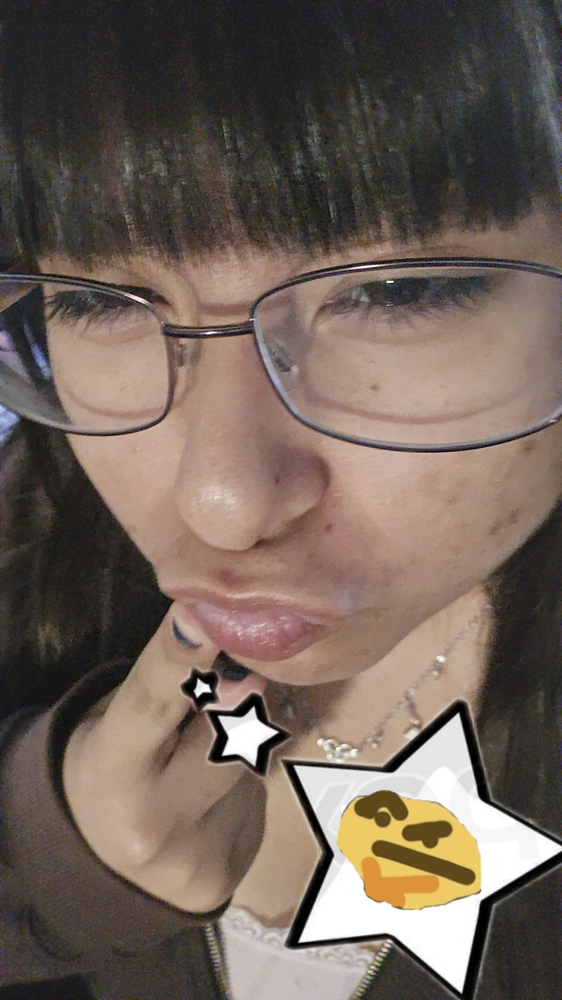
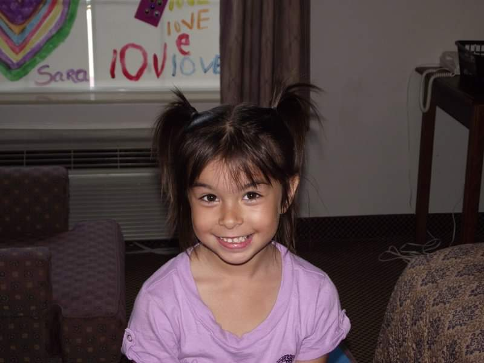
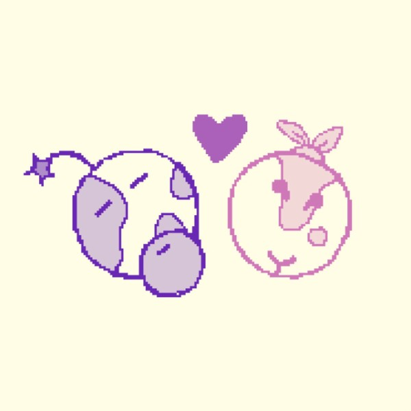

Name: Angelina De Vivo
Major: Writing Studies B.A
Pronouns: she/her/hers
Interests: writing, literature, manga, insects, apples, pokémon, tinned fish, and clown dolls
Listening to: The Carpenters
Reading: The Wind Has Risen by Hori Tatsuo
Working on: Grad School (╥‸╥)
I'm twenty-one years old, I was born and spent the majority of my life in Warner Robins, Georgia. I'm a proud granddaughter of immigrants who came here from Sicily and Taiwan. As a child I spent majority of my time absorbed in books — especially ones about insects or science — or playing Pokémon Black on my DSi. And to be honest that hasn't changed much since becoming an adult.
I'm extremely interested in pomology (study of apples) and entomology. For anyone who knows me, they can tell you I have very strong opinions on different types of apples (and basically any fruit or veggie).
I truthfully do not know what else to write here, nor do I really want to...sigh. If you're curious or simply bored, you're welcome to check the browse tab for my self-interview!
Oh, and my favorite color is pink. My favorite animals are rabbits and hares. And I adore praying mantids.
I'm equally interested in STEM and humanities, and I’ve spent time studying both. I started my journey here at UC Merced studying human biology before ultimately switching to writing studies right before my third year. An excellent instructor here introduced me to the program and it left me grappled since my first writing class. It took a little over a year for me to actually change my major, but now I wish I spent more time with all the people and faculty I've met here.
My writing has never been about me as a person, but about the experiences I notice around me. I’m more interested in how others interact with the world and what expressions can be made from them. But rather than translating these experiences into the human body, I much rather personify something. Whether that be insects, physical objects, or even just a concept of existence. There is so much going on around us that it’d be selfish to limit emotion to only ourselves. I hope to bring life and creation into everything sharing our space. And of course, bring my own perspective to things.
Diagnosed medical conditions: Sensorineural Hearing Loss (SNHL), Ehlers-Danlos Syndrome (EDS), Postural Orthostatic Tachycardia Syndrome (POTS), Mast Cell Activation Syndrome (MCAS), Autism, Obsessive Compulsive Disorder (OCD) and a few more (๑>•̀๑) !!
I have been disabled since I was born, but none of us knew until I was older. I grew up believing I was able-bodied, I didn't know the extent of any of my medical concerns until I was already mid-way through college. We caught my hearing loss when I was around 12, but my connective tissue disorder wasn't taken seriously until I was 20. I'm still working on trying to get everything taken care of. Whoopsie.
A connective tissue disorder effects everything within my body. Everything from teeth, gums, veins, heart, skin, eyes, organs, joints, and more is wired differently. Most medications do more harm rather than good. No anaesthesia or numbing works on me. I can't eat most things. None of this is to envoke pity, I'm just wanting a deeper understanding of my life.
I need to use a cane or rollator, but I still don't. I find myself sacrificing safety and health over convinence quite often. The world around us isn't really built for someone who can't have to open hands and feet at all time. It's rather hard to balance my comfort and public spaces.
It's hard to define my queer identity to someone who doesn't themselves already understand queer identity themselves. But I'll try regardless.
I identify as a femme lesbian. The "femme" identity derieves from historical and political context, setting it apart from other terms often used to simply describe aesthetic.
I grew up in a very conservative town, I often got bullied or harrassed for being gay. It never bothered me much to be honest, I'm a rather spiteful person. But I didn't like it happening to others around me. I was a very rough and hot-headed teenager, it's quite embarrassing how many fights I got into, not that I regret any of them. I feel like my personality is much different from then. I've calmed down a lot, even if I'm still as stubborn.